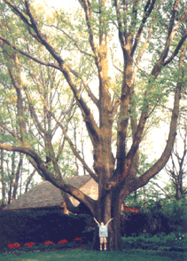

Student Project
Nicholas


The tree I found stands in a neighbor's backyard at the end of my street. It is a White Oak (Quercus Alba). My Dad said that the tree is about 300-400 years old. It has never been struck by lightening, damaged by storms or anything that stopped its growth. The tree is 13 feet in circumference, five feet wide, and 90-100 feet tall. The lowest branch is about six feet off the ground. It is an unusual tree in our area. Instead of growing just upward, it grew outward and upward. It started to grow where no other trees were so it took its time and spread out! The tree grew from a seed that was brought down by a glacier that covered Ohio at one time. White Oak is the most important species of oak. It is heavy, hard, strong and quite durable.
-Nicholas
c. Nicholas
Grade 4
Thomas Jefferson Magnet School
Euclid, Ohio USA
"White Oak"
Colored Pencil on Paper 9"X12"
White Oak
Latin Name: Quercus Alba
Age: 300-400 years old
Circumference at 54 inches from the base: 13 feet
Location: Euclid, Ohio USA
 Return to Main Page
Return to Main Page
June Julian jj68@nyu.edu